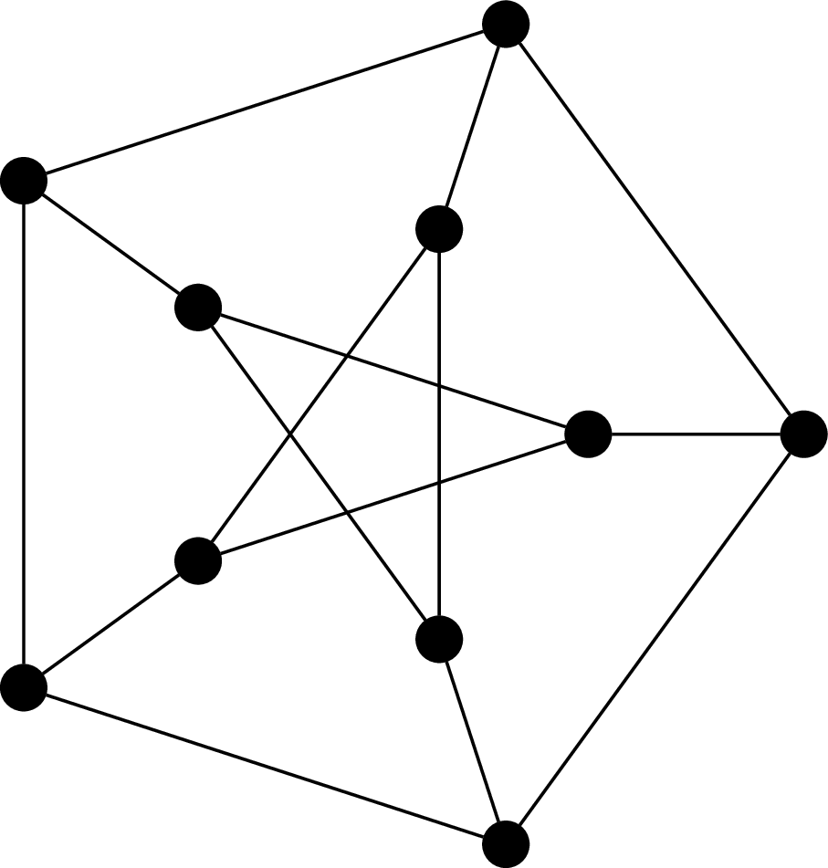
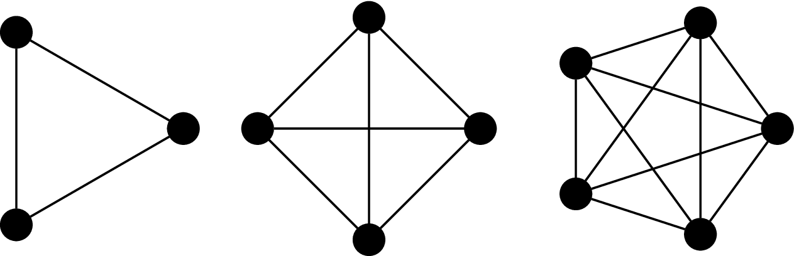
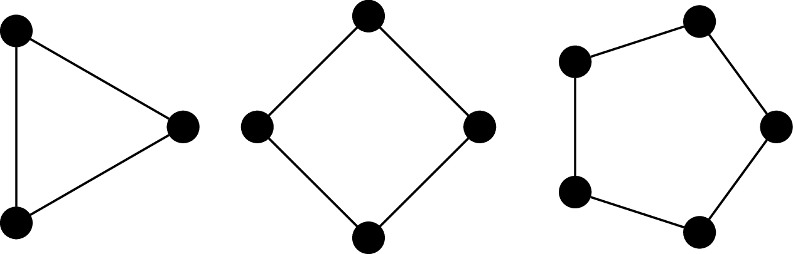
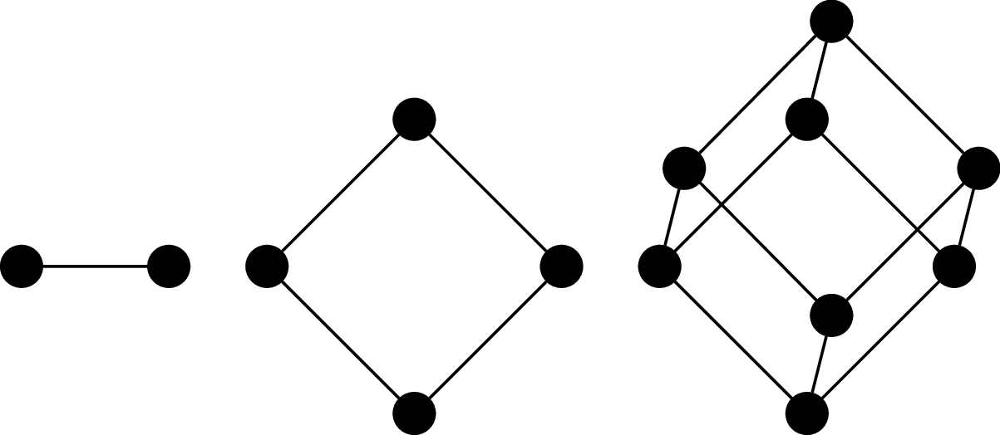
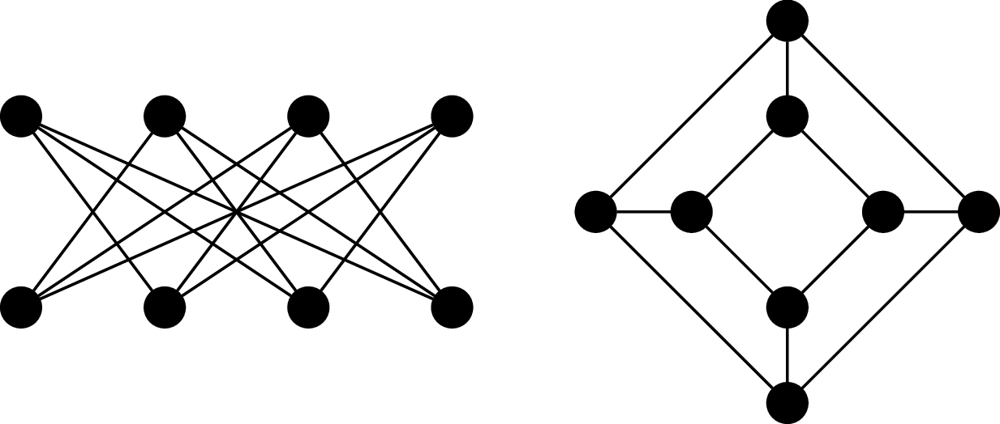
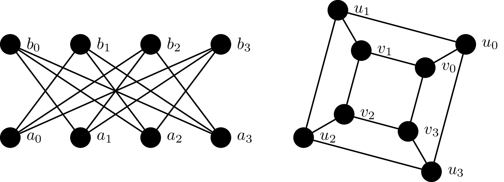

Something that we've run into despite my best efforts to shield you from it until now so I could avoid getting into specifics is the notion of graphs. You may be familiar with graphs as either graphical charts of data or from calculus in the form of visualizing functions in some 2D or 3D space. Neither of these are the graphs that are discussed in graph theory.
We saw two examples where graphs snuck in. The first is from our application of the pigeonhole principle to a problem about whether two people know each other or don't know each other at a party. The second is from the example of our ambitious travelling salesperson, who wants to visit as many cities as possible with the least cost.
Both of these examples model relationships between sets of objects. In the first case, we are modelling what's basically a social network. Our objects are people and the relationships are described as: two people are connected by either a "knows each other" relationship or a "doesn't know each other" relationship. In the second case, our objects are cities and their relationship is described not only by a connection, but by a weight or cost on that connection, representing the cost to travel between the two cities.
Definition 24.1. A graph $G = (V,E)$ is a pair with a non-empty set of vertices $V$ together with a set of edges $E$. An edge $e \in E$ is an unordered pair $(u,v)$ of distinct vertices $u,v \in V$.

This graph is called the Petersen graph. The Petersen graph is a particularly interesting graph, not just because it looks neat, but because it happens to be a common counterexample for many results in graph theory.
Note that, since edges are unordered, we really should be writing them as $\{u,v\}$, but we don't.
One can define graphs more generally and then restrict consideration to our particular definition of graphs, which would usually be then called simple graphs. The more general definition of graphs allows for things like multiple edges between vertices or loops. Other enhancements may include asymmetric edges (which we call directed edges), equipping edges with weights, and even generalizing edges to hyperedges that relate more than two vertices. Instead, what we do is start with the most basic version of a graph, from which we can augment our definition with the more fancy features if necessary (it will not be necessary in this course).
Definition 24.2. Two vertices $u$ and $v$ of a graph $G$ are adjacent if they are joined by an edge $(u,v)$. We say the edge $(u,v)$ is incident to $u$ and $v$.
Definition 24.3. Two vertices $u$ and $v$ are neighbours if they are adjacent. The neighbourhood of a vertex $v$ is the set of neighbours of $v$ $$N(v) = \{u \in V \mid (u,v) \in E\}.$$ We can extend this definition to sets of vertices $A \subseteq V$ by $$N(A) = \bigcup_{v \in A} N(v).$$
Definition 24.4. The degree of a vertex $v$ in $G$, denoted $\deg(v)$, is the number of its neighbours. A graph $G$ is $k$-regular if every vertex in $G$ has degree $k$.
Observe that every vertex in the Petersen graph has degree 3, so the Petersen graph is 3-regular, or cubic.
The following results are some of the first graph theory results, proved by Leonhard Euler in 1736.
Theorem 24.5 (Handshaking Lemma). Let $G = (V,E)$ be an undirected graph. Then $$\sum_{v \in V} \deg(v) = 2 \cdot |E|.$$
Proof. Every edge $(u,v)$ is incident to exactly two vertices: $u$ and $v$. Therefore, each edge contributes 2 to the sum of the degrees of the vertices in the graph. $\tag*{$\Box$}$
Corollary 24.6. Let $G$ be a graph. Then the number of vertices of odd degree in $G$ is even.
Proof. Let $V_1, V_2 \subseteq V$ be the sets of odd and even vertices of $G$, respectively. Then $$2|E| = \sum_{v \in V_1} \deg(v) + \sum_{v \in V_2} \deg(v).$$ We observe that since $\deg(v)$ for $v \in V_2$ is even, then the sum $\sum_{v \in V_2} \deg(v)$ is even. Then since $2|E|$ is even, this must mean that the sum $\sum_{v \in V_1} \deg(v)$ is even. But since $\deg(v)$ is odd for $v \in V_1$, this implies that $|V_1|$ must be even. $\tag*{$\Box$}$
It's the corollary that gives the name for the handshaking lemma. When rephrased as a bunch of people shaking hands, the lemma says that there must be an even number of people who have shaken an odd number of hands.
Definition 24.7. The complete graph on $n$ vertices is the graph $K_n = (V,E)$, where $|V| = n$ and $$E = \{(u,v) \mid u,v \in V\}.$$ That is, every pair of vertices are neighbours.

Definition 24.8. The cycle graph on $n$ vertices is the graph $C_n = (V,E)$ where $V = \{v_1, v_2, \dots, v_n\}$ and $E = \{(v_i,v_j) \mid j = i + 1 \bmod n\}$. It's named so because the most obvious way to draw the graph is with the vertices arranged in order, on a circle.

Definition 24.9. The $n$-(hyper)cube graph is the graph $Q_n = (V,E)$, where $V = \{0,1\}^n$ (i.e., binary strings of length $n$) and $(u,v)$ is an edge if, for $u = a_1 a_2 \cdots a_n$ and $v = b_1 b_2 \cdots b_n$, there exists an index $i, 1 \leq i \leq n$ such that $a_i \neq b_i$ and $a_j = b_j$ for all $j \neq i$. In other words, $u$ and $v$ differ in exactly one symbol.

It's called a cube (or hypercube) because one of the ways to draw it is to arrange the vertices and edges so that they form the $n$th-dimensional cube.
Consider the following graphs.

These two graphs happen to be the "same". Furthermore, it turns out that these are also basically the same graph as $Q_3$, or at least, we feel that it should be. This means we don't need to necessarily draw a $3$-cube like a cube (and we certainly wouldn't expect this for $n \gt 3$).
Although the visual representation of the graph is very convenient, it is sometimes misleading, because we're limited to 2D drawings. In fact, there is a vast area of research devoted to graph drawing and the mathematics of embedding graphs in two dimensions. The point of this is that two graphs may look very different, but turn out to be the same.
But even more fundamental than that, we intuitively understand that just because the graph isn't exactly the same (i.e., the vertices are named something differently) doesn't mean that we don't want to consider them equivalent. So how do we discuss whether two graphs are basically the same, just with different names or drawings?
Definition 24.10. An isomorphism between two graphs $G_1 = (V_1,E_1)$ and $G_2 = (V_2,E_2)$ is a bijection $f:V_1 \to V_2$ which preserves adjacency. That is, for all vertices $u,v \in V_1$, $u$ is adjacent to $v$ in $G$ if and only if $f(u)$ and $f(v)$ are adjacent in $G_2$. Two graphs $G_1$ and $G_2$ are isomorphic if there exists an isomorphism between them, denoted $G_1 \cong G_2$.
In other words, we consider two graphs to be the "same" or equivalent if we can map every vertex to the other graph such that the adjacency relationship is preserved. In practice, this amounts to a "renaming" of the vertices, which is what we typically mean when we say that two objects are isomorphic. Of course, this really means that the edges are preserved.
Example 24.11. Consider the following graphs $G_1 = (V_1, E_1)$ and $G_2 = (V_2, E_2)$.

We will show that these two graphs are isomorphic by defining a bijective function $f:V_1 \to V_2$ which preserves adjacency: \begin{align*} f(a_0) &= u_0 & f(a_1) &= v_3 & f(a_2) &= u_2 & f(a_3) &= v_1 \\ f(b_0) &= v_2 & f(b_1) &= u_1 & f(b_2) &= v_0 & f(b_3) &= u_3 \\ \end{align*} This is a bijection, since every vertex in $V_1$ is paired with a vertex in $V_2$. We then verify that this bijection preserves adjacency by checking each edge under the bijection: \begin{align*} (f(a_0),f(b_1)) &= (u_0,u_1) & (f(a_0),f(b_2)) &= (u_0,v_0) & (f(a_0),f(b_3)) &= (u_0,u_3) \\ (f(a_1),f(b_0)) &= (v_3,v_2) & (f(a_1),f(b_2)) &= (v_3,v_0) & (f(a_1),f(b_3)) &= (v_3,u_3) \\ (f(a_2),f(b_0)) &= (u_2,v_2) & (f(a_2),f(b_1)) &= (u_2,u_1) & (f(a_2),f(b_3)) &= (u_2,u_3) \\ (f(a_3),f(b_0)) &= (v_1,v_2) & (f(a_3),f(b_1)) &= (v_1,u_1) & (f(a_3),f(b_2)) &= (v_1,v_0) \end{align*}
So an obvious and fundamental problem that arises from this definition is: Given two graphs $G_1$ and $G_2$, are they isomorphic? The obvious answer is that we just need to come up with an isomorphism or show that one doesn't exist. Unfortunately, there are $n!$ possible such mappings we would need to check. In fact, characterizing the complexity of solving the graph isomorphism problem is one of the most challenging problems in theoretical computer science. The most significant progress on this problem was made in 2015 (and 2017) by our own Lazlo Babai, who proved that graph isomorphism can be solved in $2^{O(\log^c n)}$ for some $c$.